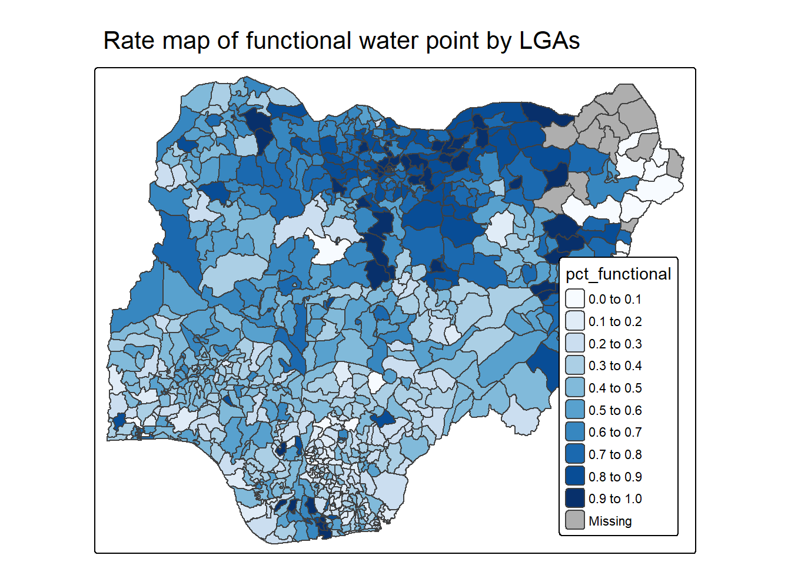
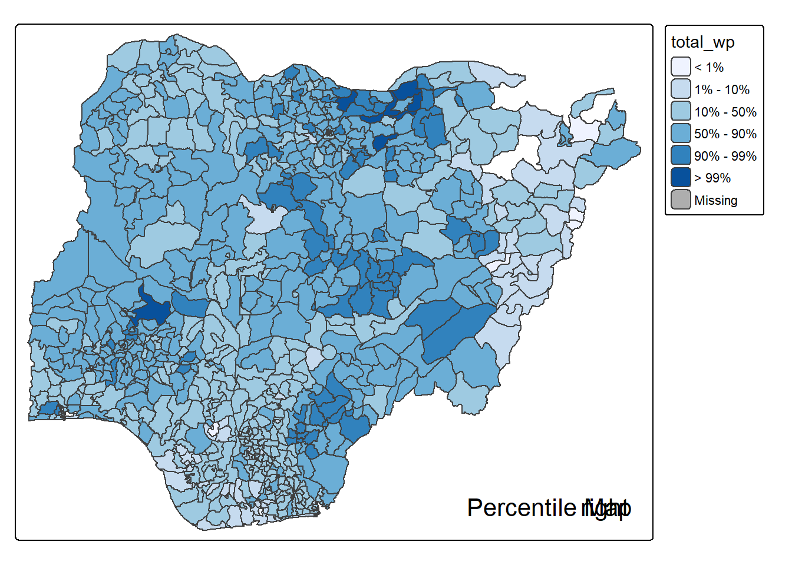

Code
pacman::p_load(tmap, tidyverse, sf)Note: Please toggle between ‘Show’ and ‘Hide’ above based on your preference for viewing the R codes.
In this in-class exercise, you will gain hands-on experience on using appropriate R methods to plot analytical maps.
By the end of this in-class exercise, you will be able to use appropriate functions of tmap and tidyverse to perform the following tasks:
Importing geospatial data in rds format into R environment.
Creating cartographic quality choropleth maps by using appropriate tmap functions.
Creating rate map
Creating percentile map
Creating boxmap
pacman::p_load(tmap, tidyverse, sf)For the purpose of this hands-on exercise, a prepared data set called NGA_wp.rds will be used. The data set is a polygon feature data.frame providing information on water point of Nigeria at the LGA level. You can find the data set in the rds sub-direct of the hands-on data folder.
NGA_wp <- read_rds("data/rds/NGA_wp.rds")Ploting a choropleth map showing the distribution of non-function water point by LGA.
p1 <- tm_shape(NGA_wp) +
tm_polygons(fill = "wp_functional",
fill.scale = tm_scale_intervals(
style = "equal",
n = 10,
values = "brewer.blues"),
fill.legend = tm_legend(
position = c("right", "bottom"))) +
tm_borders(lwd = 0.1,
fill_alpha = 1) +
tm_title("Distribution of functional water point by LGAs")p2 <- tm_shape(NGA_wp) +
tm_polygons(fill = "total_wp",
fill.scale = tm_scale_intervals(
style = "equal",
n = 10,
values = "brewer.blues"),
fill.legend = tm_legend(
position = c("right", "bottom"))) +
tm_borders(lwd = 0.1,
fill_alpha = 1) +
tm_title("Distribution of total water point by LGAs")tmap_arrange(p2, p1, nrow = 1)
In much of our readings we have now seen the importance to map rates rather than counts of things, and that is for the simple reason that water points are not equally distributed in space. That means that if we do not account for how many water points are somewhere, we end up mapping total water point size rather than our topic of interest.
We will tabulate the proportion of functional water points and the proportion of non-functional water points in each LGA. In the following code chunk, mutate() from dplyr package is used to derive two fields, namely pct_functional and pct_nonfunctional.
NGA_wp <- NGA_wp %>%
mutate(pct_functional = wp_functional/total_wp) %>%
mutate(pct_nonfunctional = wp_nonfunctional/total_wp)Plotting a choropleth map showing the distribution of percentage functional water point by LGA.
tm_shape(NGA_wp) +
tm_polygons("pct_functional",
fill.scale = tm_scale_intervals(
style = "equal",
n = 10,
values = "brewer.blues"),
fill.legend = tm_legend(
position = c("right", "bottom"))) +
tm_borders(lwd = 0.1,
fill_alpha = 1) +
tm_title("Rate map of functional water point by LGAs")
Extreme value maps are variations of common choropleth maps where the classification is designed to highlight extreme values at the lower and upper end of the scale, with the goal of identifying outliers. These maps were developed in the spirit of spatializing EDA, i.e., adding spatial features to commonly used approaches in non-spatial EDA (Anselin 1994).
The percentile map is a special type of quantile map with six specific categories: 0-1%,1-10%, 10-50%,50-90%,90-99%, and 99-100%. The corresponding breakpoints can be derived by means of the base R quantile command, passing an explicit vector of cumulative probabilities as c(0,.01,.1,.5,.9,.99,1). Note that the begin and endpoint need to be included.
Step 1: Exclude records with NA by using the code chunk below.
NGA_wp <- NGA_wp %>%
drop_na()Step 2: Creating customised classification and extracting values
percent <- c(0,.01,.1,.5,.9,.99,1)
var <- NGA_wp["pct_functional"] %>%
st_set_geometry(NULL)
quantile(var[,1], percent) 0% 1% 10% 50% 90% 99% 100%
0.0000000 0.0000000 0.2169811 0.4791667 0.8611111 1.0000000 1.0000000 When variables are extracted from an sf data.frame, the geometry is extracted as well. For mapping and spatial manipulation, this is the expected behavior, but many base R functions cannot deal with the geometry. Specifically, the quantile() gives an error. As a result st_set_geomtry(NULL) is used to drop geomtry field.
Writing a function has three big advantages over using copy-and-paste:
You can give a function an evocative name that makes your code easier to understand.
As requirements change, you only need to update code in one place, instead of many.
You eliminate the chance of making incidental mistakes when you copy and paste (i.e. updating a variable name in one place, but not in another).
Source: Chapter 19: Functions of R for Data Science.
Firstly, we will write an R function as shown below to extract a variable (i.e. wp_nonfunctional) as a vector out of an sf data.frame.
arguments:
vname: variable name (as character, in quotes)
df: name of sf data frame
returns:
get.var <- function(vname,df) {
v <- df[vname] %>%
st_set_geometry(NULL)
v <- unname(v[,1])
return(v)
}Next, we will write a percentile mapping function by using the code chunk below.
percentmap <- function(vnam, df, legtitle=NA, mtitle="Percentile Map"){
percent <- c(0,.01,.1,.5,.9,.99,1)
var <- get.var(vnam, df)
bperc <- quantile(var, percent)
tm_shape(df) +
tm_polygons() +
tm_shape(df) +
tm_polygons(vnam,
title=legtitle,
breaks=bperc,
palette="Blues",
labels=c("< 1%", "1% - 10%", "10% - 50%", "50% - 90%", "90% - 99%", "> 99%")) +
tm_borders() +
tm_layout(main.title = mtitle,
title.position = c("right","bottom"))
}To run the function, type the code chunk as shown below.
percentmap("total_wp", NGA_wp)
Note that this is just a bare bones implementation. Additional arguments such as the title, legend positioning just to name a few of them, could be passed to customise various features of the map.